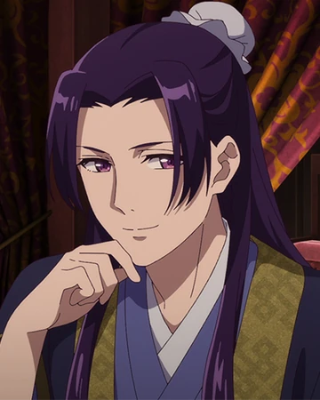
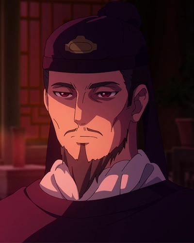
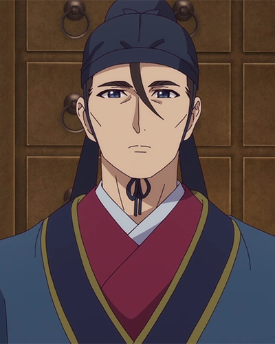
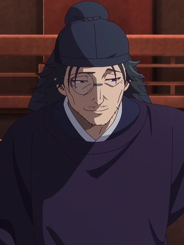
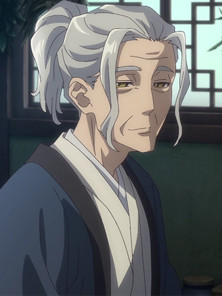

Personajes relevantes

Maomao / Aoi Yūki: Una joven boticaria que, tras ser secuestrada y vendida al harén imperial, se ve obligada a trabajar como sirvienta. Su conocimiento de medicina y curiosidad la convierten en una investigadora astuta que resuelve misterios en la corte imperial.

Jinshi / Takeo Ōtsuka: Un eunuco de la Corte Interior que involucra a Maomao en resolver misterios a cambio de medicinas raras. Su apatía evoluciona en afecto romántico.

Emperador Li / Daichi Endō: Hombre bondadoso que busca reconstruir la reputación del imperio, gobernando con paz y prosperidad mientras enfrenta desafíos políticos.

Gaoshun / Katsuyuki Konishi: Asistente del Emperador Li, transferido a servir a Jinshi, conocido por su lealtad y pragmatismo.

Lakan / Takuya Kirimoto: Funcionario de la corte interesado en estrategia y el juego Go.

Luomen / Hiroshi Yanaka: Eunuco y boticario, mentor y padre adoptivo de Maomao, figura clave en la corte interior.